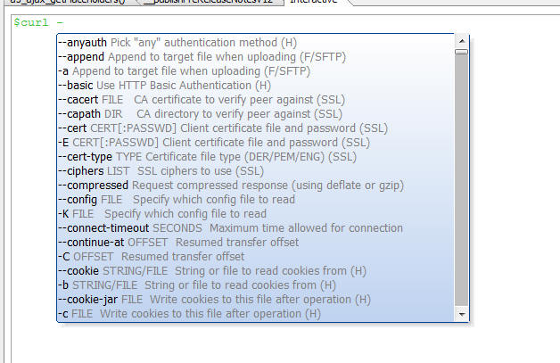
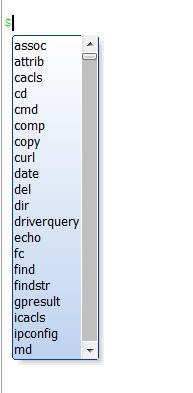
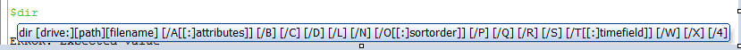
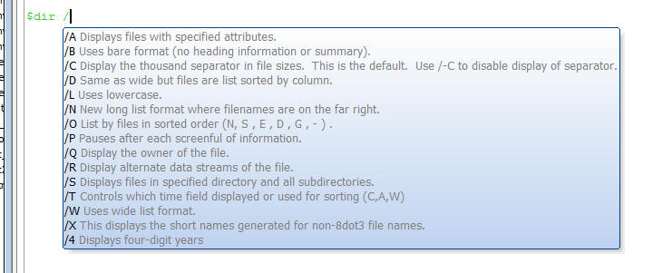

You can now executed shell commands directly from the Interactive Window in Alpha Anywhere.
Watch Video - Part 1
Watch Video - Part 2
Shelling out to the command line, and executing shell commands can now be done from directly the Alpha Anywhere Interactive window by preceding the shell command with a '$' sign.
Run the DIR command:
$dir c:\data /b ApplicationServerConfig.xml chome.png data.json db font-awesome invtest.rtf Northwind.mdb test.pdf times.txt
Show the current date:
$date /T Sun 07/27/2014
Execute a CURL command:
Note the use of the --silent and --no-buffer CURL options
$curl http://worldcup.kimonolabs.com/api/players --silent --no-buffer
{"error":"Unauthorized - Invalid API Key"}
Auto-complete help is supported for a many shell commands. For example, when you type the first - after the $curl command note how the CURL command options are shown.

NOTE: The auto-complete help is defined in the interactive_shell.json file in the executable folder. You can modify this file to add auto-complete help for other shell commands.
Interactive shell commands are supported and they run in the Interactive Window until you exit or hit ^Z (which forces a terminate).
Run Node.js from the Interactive Window (this is the standard Node.JS REPL):
$node
> 1+1
2
> "hello world".split()
[ 'hello world' ]
> var fs = require('fs');
undefined
> fs.existsSync("c:/program files (x86)/a5v12/alpha5.exe")
true
> process.exit()
NOTE: process.exit() is the Node command for closing Node. We could also have simply typed ^Z in the Interactive Window to end the interactive Node session.
The Interactive Shell commands allows redirecting output to an Xbasic variable.
For example, here we use the DIR command and we redirect the output (using the > directive) to an Xbasic variable called 'files'. We then use the Xbasic function to display the contents of the variable.
$dir c:\a5v12 > files showvar(files)
When a shell command is expecting input that you would normally type in, you can redirect input to the shell command using the < directive.
For example here we create an Xbasic variable with a long list of colors using the a5.color_enum() function. Notice that we append a ^Z (chr(26)) character to the end of the string, or else the command window will not know that there is no more input to receive. We then call the SORT command and pipe input to the command from the 'colors' variable, and pipe output from the command to the 'sorted' variable. Then we show the contents of the sorted variable using the showvar() function.
dim colors as c colors = a5.Color_Enum() + chr(26) $sort < colors > sorted showvar(sorted)
TIP: When using the command window, if the command window appears hung, it is likely that the shell is simply waiting for more input. You can press ^Z as you would in a normal CMD window to end the command. For shell commands that are expecting input, adding a trailing ^Z after the input will let the shell know that the end of the input has been reached.
The Shell configuration file is a JSON file (interactive_shell.json) that describes the shell commands and settings. This file can be in either the application data folder OR the executable path.
The predefined system default file is in the EXE folder, but Alpha Anywhere will look in the application data folder first and use that file instead of the system file. If the file in the application data folder has the 'extend' parameter set to 'true' (see below), then the file in the application data folder will extend the system file.
it will use the file in addition to the system commands if "extend" : true parameter is set at the top of the file.
NOTE: The location of the application data folder is returned by the A5_GetApplicationDataFolder() function.
The format of the configuration file entries is shown below.
{
"extend" : (true/false)
, "<command>" : {
"help" : ""
, "description" : "<description>"
, "default-arguments" : "<arguments>"
, "require-command" : (true/false)
, "require-console" : (true/false)
, "options" : {
, "<option>" {
"description" : "<description>"
"alias" : "<alias>"
}
}
}
...
}
| JSON Attribute | :Description |
|---|---|
| "extend" | :If true, load the defaults in addition to this file (we are adding, not overriding completely) |
| "<command>" | :Commands are named objects that follow - i.e. "dir" |
| "help" | Optional help to display when the command has been selected |
| "description" | Optional description of command |
| "default-arguments" | Optional default arguments to pass to the command when none are specified. |
| "require-command" | Optional flag, which when true runs as a shell command, this is required for batch and interpretted commands. |
| "require-console" | Optional flag, which when true uses a hidden consult window instead of pipes. pipes are preferable because they are not lossy, but applications may require this setting. |
| "options" | Optional parameter help for command |
| "<option>" | {A parameter |
| "description" | Optional description of parameter |
| "alias" | Some parameters have short versions of the same parameter, this is stored in the alias |
When you type the initial $ in the Interactive Window, the auto-complete help shows all of the shell commands that have been defined in the interactive_shell.json file.

The example below shows the configuration file entry for the DIR shell command. When you type $dir in the Interactive window, auto-complete help is displayed (as shown in the image below).

The help that is displayed is defined by the help property in the JSON string shown below.
The require-command option is defined as 'true'. This is because the DIR command requires the CMD shell to be running to execute.
"dir" :
{
"help" : "dir [drive:][path][filename] [/A[[:]attributes]] [/B] [/C] [/D] [/L] [/N] [/O[[:]sortorder]] [/P] [/Q] [/R] [/S] [/T[[:]timefield]] [/W] [/X] [/4]",
"require-command" : true ,
"options" : {
"/A" : { "description" : "Displays files with specified attributes." } ,
"/B" : { "description" : "Uses bare format (no heading information or summary)." } ,
"/C" : { "description" : "Display the thousand separator in file sizes. This is the default. Use /-C to disable display of separator." } ,
"/D" : { "description" : "Same as wide but files are list sorted by column." } ,
"/L" : { "description" : "Uses lowercase." } ,
"/N" : { "description" : "New long list format where filenames are on the far right." } ,
"/O" : { "description" : "List by files in sorted order (N, S , E , D , G , - ) ." } ,
"/P" : { "description" : "Pauses after each screenful of information." } ,
"/Q" : { "description" : "Display the owner of the file." } ,
"/R" : { "description" : "Display alternate data streams of the file." } ,
"/S" : { "description" : "Displays files in specified directory and all subdirectories." } ,
"/T" : { "description" : "Controls which time field displayed or used for sorting (C,A,W)" } ,
"/W" : { "description" : "Uses wide list format." } ,
"/X" : { "description" : "This displays the short names generated for non-8dot3 file names." } ,
"/4" : { "description" : "Displays four-digit years" }
}
} ,
When you type the / character, options are shown.
These options are defined by the options parameter in the interactive_shell.json file.
